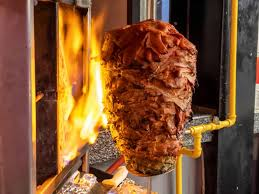
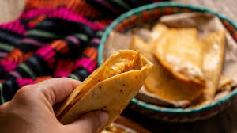
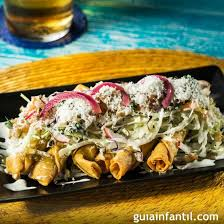
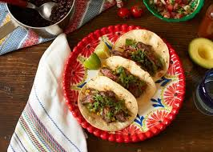
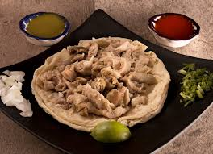

Tacos al pastor.................... |
Ingredientes:-Chile huajillo -Dientes de ajo -Carne de cerdo -Sal y pimienta -Piña |
 |
Tacos de Canasta.................... |
Ingredientes:-Relleno de papa-Una cucharada de aceite -2 Cebollas -Chile cerranos -Leche |
 |
Tacos Dorados.................... |
Ingredientes:-Tortillas de maiz-Pollo desmechado -Cebolla -Aceite -Cilantro |
 |
Tacos de Bisteck.................... |
Ingredientes:-Bisteck de res-Tortillas de maiz -Cebolla -Cilantro -Salsa tipo inglesa -Aceite |
 |
Tacos de Tripa.................... |
Ingredientes:-Tripa de res-Cebolla -Ajo -Sal -Tortillas de maiz -Manteca de cerdo -Cilantro -Limon |
 |